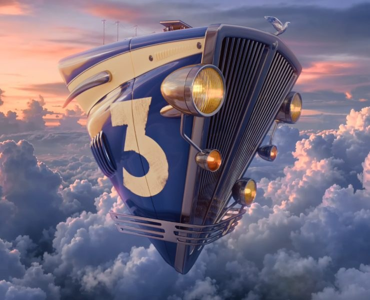

ТВ-3 · 2026
ТВ-3: ID «Век изобретений»
Полный цикл производства съемочно-графических ID-роликов для ТВ-3. В центре каждого сюжета — тетраэдр, ключевой элемент айдентики канала, внутри которого разворачивается своя история.

Для ТВ-3 мы сняли серию эфирных заставок «Век изобретений». Отправной точкой стала история создания первого российского спортивного автомобиля. В каждом ролике внутри тетраэдра из айдентики канала разворачивается отдельный сюжет.